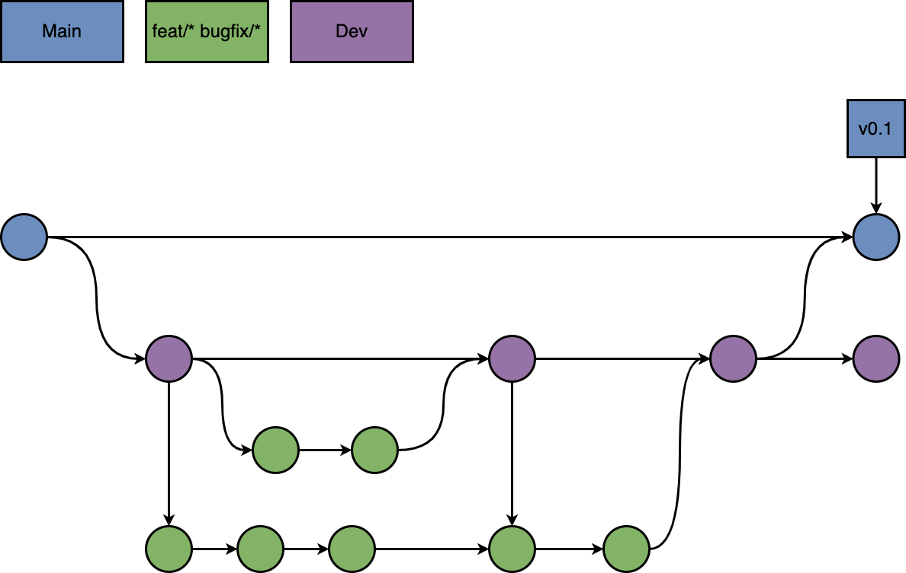

Thank you for taking the time to contribute to exDE (Extensible Differential Equations for mosquito-borne pathogen modeling). In this document we will explain the following topics:
- 1. What is our Git workflow?
- 2. How is the R package organized?
- 3. If I am making a large addition (e.g. a new human disease model), what should I add to the package?
- 4. After making changes locally, how to rebuild the package and run tests?
- 5. How to make a good pull request (PR), and how should reviewers review pull requests?
- 6. If the GitHub continuous integration (CI) tests fail, how to diagnose the problems and address them?
- 7. How to get ready for a version update (for core dev team)?
- 8. If I find a bug or something I just can’t figure out, how to ask for help?
This document is intended to be a complete guide on how to get started developing with exDE. As this document is part of the package, if you find something about it incorrect, baffling, or just have a suggestion, please follow the steps for bug/issue reporting to let us know!
Git workflow
The exDE project is hosted on GitHub (at this repository), and we
use a Git workflow similar to “Gitflow” (albeit without a separate
release branch, main takes over that role),
described here.
A Git workflow is a way to use the repository in such a way to invite
collaboration in an organized way that protects the latest stable
version of the software from unintended changes.
If you are new to Git or need some reminders, please check out the excellent documentation at Atlassian. We recommend reading “Getting Started” to learn how to set up a repository, followed by “Collaborating” to learn about how to work with branches, pull requests, merging, and other common Git activities.
Our workflow is designed around branches. The main,
dev, and gh-pages branches always exist in the
repository. Other branches exist as long as the person(s) working on
them need them, and should be deleted after they have been merged into
dev.
-
main: this is the branch that contains the latest version release of exDE, and when it is updated the CRAN version will also be updated. PRs should not be submitted to it except by the core dev team, as updated tomainwill mean we need to update the package on CRAN and do various other housekeeping tasks to accompany a version update (i.e. create an archival release once the update is accepted by CRAN). -
dev: this is the branch that all PRs from collaborators should be made to. The version of the code atdevshould always be useable (i.e. pass all automated tests), and will contain the latest cutting edge features. Periodically whendevhas accumulated a sufficient number of new features, a member of the core dev team will make a PR fromdevintomain. Because aftermainis updated we will update the CRAN package, these should not be too often, as CRAN themselves request that package maintainers submit updates “no more than every 1–2 months”. -
gh-pages: this branch exists to support our GitHub pages website (the one you are browsing right now). It is updated automatically by our pkgdown continuous integration workflow which rebuilds the website whenmainis pushed to (i.e. when a PR is merged intomain).gh-pagesshould be considered a “read-only” branch, even for the core dev team. -
feat/*: branches starting withfeat/should be how collaborators (and core dev) names branches which are updating or including new features, including but not limited to code, documentation, or tests. For example, a branch which improved documentation for this document could be calledfeat/UpdateContributing. After the PR from afeat/branch is merged intodev, thatfeat/branch should be deleted. PRs should never be made fromfeat/branches intomain. -
bugfix/*: for small bugfixes (spelling errors, misnamed variables, etc), it may be appropriate to make abugfix/branch. The same rules apply to these as forfeat/branches.
Some of our branches use GitHub’s
branch protection rules to enforce these rules. Core dev team
members can access these by going to Settings -> Branches. Both
main and dev are protected from deletion. PRs
made to dev must be reviewed and approved by at least 1
reviewer before they are allowed to be merged.

We show an example of our workflow above.
The main branch, in blue, starts at the left side, and
dev is created from it, below in purple. After that, two
feat/* or bugfix/* branches are created from
dev at that time, shown in green. The upper one has two
updates before it is merged back into dev, via a pull
request. After that pull request, the lower one must pull the updates
from dev so it is working with the latest version of the
code. After another update, it is ready to be merged into
dev via a pull request. At this point, we decide that these
two features are enough for a version update, so we make a pull request
from dev into main to update to version 0.1.
After being merged, we can again start making feat/* or
bugfix/* branches from dev to start developing
for version 0.2!
Example
Let’s say you have a great idea for a new feature, which is a change to improve this document. Here’s how you would get started with our Git workflow to get your feature on the road to being merged into the exDE software.
Please note, we assume some familiarity with Git commands here. For a reference on the meaning of these commands, please see the Git documentation.
- To start to work on exDE, you should first clone
the repository. In a terminal window, navigate to the directory you want
the
exDEfolder to appear in, and then rungit clone git@github.com:dd-harp/exDE.git, if you use SSH keys, orgit clone https://github.com/dd-harp/exDE.gitto clone with HTTPS. These links can be found if you click the green “Code” button from the main repository page. - Once you clone the repository, go inside it with
cd exDE. Then rungit fetch --allwhich retrieves information about all the branches on the remote (the repository on the GitHub website) into your local repository (the one on your computer). - Now you will switch to the
devbranch by doinggit checkout dev. You can make sure it’s up to date by runninggit pull origin dev. - Let’s say you want to call your new feature branch
feat/UpdateContributing. You can make it and switch to it by runninggit checkout -b feat/UpdateContributing. - To push this new branch to the remote repository, run
git push origin feat/UpdateContributing. It will now appear in the list of branches. - Now, make your changes! We recommend editing the package in RStudio using
the R project file
exDE.Rprojin the repository. This will be explained more in Section 3. - Once you are ready to push your changes, use
git addto either add files to a commit one by one, or if you know you want to add all new and/or modified files, you can usegit add .. - Run
git commit -m "your message explaining what these changes do"to make a commit with a message. We do not mind many small commits, so if that is your Git style, please do not feel pressure to only make large commits. - Now
git push origin feat/UpdateContributingto push the commit to the remote branchfeat/UpdateContributing! If you navigate to that branch on the GitHub repository, you should see your changes.
Now repeat steps 6 to 9 until you are ready to start testing your changes and submit a pull request (covered in Sections 4 and 5).
The exDE R package
exDE is an R package, so if you are going to be making substantial changes, it is necessary to have a sense of how it is organized and how the package must be rebuilt for creating documentation, exporting functions, and testing. The most extensive documentation for how an R package is structured comes from the official R manual, Writing R Extensions. A shorter guide with tips on current best practice is the book R Packages, if you are unfamiliar with R packages, we reccomend briefly skimming the book as a starting point.
The building of exDE is supported by pkgdown, which is responsible for automatically building the documentation website you are browsing right now, and testthat which is used to test the package.
Some files in the top level directory that are important to be aware of are:
-
_pkgdown.yml: this controls how the website is generated, and is explained in this article. If you add or delete functions or objects with documentation to the package, or add or delete vignettes, you must modify this file for the website to build properly. -
DESCRIPTION: this file provides critical information about the package, and documentation for it is at the official manual and the R packages book. It should be updated only for version releases, to include additional authors, or to add additional packages toImportsorSuggests. -
NAMESPACE: a read-only file produced when running roxygen2 to build documentation for the package, it tells R what functions are exported by this package into a user’s R session when the load exDE withlibrary(exDE). It should never be modified by hand. -
NEWS.md: the NEWS page on the package’s CRAN page as well as the News tab on the GitHub pages website are built from this file; it should only be modified by the dev team when ready to updatemainwith a new version. For more information, see theutils::newshelp file. -
README.md: this is the main readme file which is displayed on the GitHub repository, the main page of the GitHub pages website, and the README page on the package’s CRAN page.
The rest of the package is organized in directories. For more detail, we recommend reading the guides linked to earlier.
-
.github/: files that control GitHub Actions used to automatically test the package when a PR is made, automatically build the package website, and automatically check code coverage (% of code checked in tests). Much more detail will be given in Section 6. -
docs/: this contains the pkgdown website which is built and pushed togh-pagesautomatically by a GitHub Action. If you trigger a manual (local) build of the website to test something usingpkgdown::build_site, it will build in this folder. This folder should be considered read-only. -
inst/: this folder serves many purposes for general R packages (see resources above for details), but currently contains theCITATIONfile used to generate the citation found inutils::citation. -
man/: this folder contains the package function/object documentation automatically generated by roxygen2, and should be considered read-only. -
R/: the source code of the package lives here; we will describe below the naming convention of the files so you can quickly identify where existing code is, or how to organize and name new code. -
tests/: within this folder is a sub-directorytestthat/which contains all the automated tests included in the package. Most of them test that models initialized at equilibrium remain at equilibrium after being integrated for some time. -
vignettes/: this folder contains .Rmd files contains the vignettes of the R package, longer form articles that document specific functionality in exDE. They are available on the GitHub pages website via the top drop down menus and the package’s CRAN page.
R/ folder
Each model component will have a “base” file ending in
-interface that defines the generic interface which any
model for that component must implement. For example
human-interface.R defines the generic methods any human
disease model must implement and human-SIS.R defines
specific methods for the SIS model of human disease dynamics.
-
Adult mosquito component: base file
adult-interface.R-
adult-GeRM.R: the generalized Ross-Macdonald model of adult mosquito dynamics.
-
-
Aquatic mosquito component: base file
aquatic-interface.R-
aquatic-basic.R: the basic competition model of aquatic mosquito dynamics. -
aquatic-trace.R: the trace (exogenously forced) model of aquatic mosquito dynamics.
-
-
Human disease component: base file
human-interface.R-
human-SIS.R: the SIS model of human disease dynamics. -
human-SIP.R: the SIP model of human disease dynamics. -
human-hMoI.R: the hybrid MoI model of human disease dynamics.
-
-
Exogenous forcing component: base file
exogeneous-interface.R-
exogenous-null: null (no) exogenous forcing.
-
-
Vector control component: base file
vc-interface.R-
vc-null.R: null (no) vector control. -
vc-lemenach.R: the Le Menach model of ITN based adult vector control.
-
-
diffeqn.R: the exDE generalized differential equations which implement the framework; these should not typically be modified. -
metrics.R: spatial metrics (as defined in the Spatial Dynamics paper) -
utils.R: utility functions
Making large changes or additions to exDE
After reading Section 2 you should have a reasonable grasp of how exDE as an R package is organized, but to really understand how to implement new models, more detail is necessary on what files one should actually modify or add. We will also describe best practices on what contributors should add to the package when making a large change.
Let’s say someone wanted to add a new human disease model, say an SIR model. The basic steps are below:
- Within
R/, make a new filehuman-SIR.Rand implement all generic methods fromhuman-interface.Rfor your new model. Also make a function named something likemake_parameters_human_SIRthat will modify the parameter environment to implement the SIR model. You can check the other human disease models as reference. - In RStudio, run Build -> Document (control/command + shift + D)
to run roxygen2 which builds functions documentation and updates the
NAMESPACEwith your new functions. Then run Build -> Install Package (control/command + shift + B) to re-install and load the package. This only works if you have opened theexDE.Rprojfile in RStudio as a project. - Make a new vignette named something like “human_vignette.Rmd” in
vignettes/describing the model and its parameters, and perhaps a simple simulation of it. - Make a test named something like
test-human-sir.Rintests/testthat/which tests the SIR model behaves as expected under conditions where the outcome is known (e.g. when no infected persons are present, the number of susceptible persons can never decrease). Please see the testthat documentation and the R packages chapter on testing for more information. - If you added new functions and vignettes, add them to the
_pkgdown.ymlfile in the appropriate place. You can usepkgdown::build_siteat this point to test that the website still builds. - We will go over more details about how to test your package locally in Section 4 and how to make a pull request in Section 5.
When writing a new model or modifying an existing one, please note
that exDE achieves modularity through the extensive use
of S3 dispatch, which is similar to single dispatch from other
programming languages. More details are at base::UseMethod
or the S3 chapter of
Advanced R. Use of S3 dispatch appears extensively in the source code of
exDE.
If writing new functions, they must be documented. Again, the
existing code provides a good reference. exDE depends
upon roxygen2 to
build documentation, and its website provides help on how to write the
appropriate tags (e.g. #' @export which makes that function
appear in the exDE NAMESPACE).
How to test locally
After making changes to exDE but before submitting a
PR, you should take some time to do local tests to make sure that the
package still works. It is extremely important to make sure that after
you implement changes, to re-document and re-install the package. From
RStudio, Build -> Document (control/command + shift + D) re-documents
the package and Build -> Install Package (control/command + shift +
B) re-installs the package. Without doing this your package
NAMESPACE file may not include your changes, and
library(exDE) will not be using the most recent version of
your code.
testthat
If you have added tests, or changed existing code and want to make
sure that tests still pass, run testthat::test_local to run
tests. If an error or warning appears, re-run all tests again to make
sure it is not a false positive (due to numerical precision errors, some
small fraction of tests will give false positive results). If the error
comes up consistently, please fix the offending code before continuing
onward.
Remember, the tests run in tests/testthat can only check
the code you have specifically put there to be tested! Any large changes
should have tests to cover functionality under cases where expected
behavior is known in advance. If you are unsure how to make appropriate
tests, please either consult existing test files, or make a PR without
the tests and tell your reviewer that you have not yet included tests
and need help making them.
devtools
A crucial function to use is devtools::check; it
includes running local tests but also an extensive set of additional
checks from R CMD check (see the official
documentation for exactly what it does). Because this also rebuilds
vignettes, it takes longer that just running tests, so it is normally
done more seldom, when one is ready to submit a PR.
pkgdown
It is always a good idea to make sure the package website still
builds after making changes. If you have added or removed and functions,
changed any function names, or added or removed and vignettes, you will
need to have updated _pkgdown.yml accordingly. To make sure
everything works as expected, run pkgdown::build_site,
which will build the website locally in the docs/ folder
(and will open automatically in your browser when it is done). Please
address problems until it builds successfully.
How to make or review a pull request
How to make a PR
At this point, you might be a little tired of reading, and maybe somewhat anxious about actually contributing at all. So it is a good time to say that making a PR can absolutely be a collaborative process. If after following the previous sections your local tests are not working, but you think your idea or new feature ought to work and would be a good addition to exDE, please consider submitting a PR and tagging other persons on the dev team who can help you get it past the finish line.
To make a pull request, first, navigate to your branch where you have
made changes (i.e. a feat/* or bugfix/*
branch). To open the PR, follow the GitHub
documentation or Atlassian
documentation, and remember that PRs should only be made into
dev (e.g. with dev as the “base”).
When making the PR, you will be prompted to enter a description which explains what the PR does. Please ensure that a PR does not include too many disparate modifications, and that it represents a self-contained piece of work (i.e. do not submit PRs that change both a human and a mosquito model; please submit two separate PRs for each). Please make sure the text description contains the following elements:
- If the PR addresses or solves an active issue, tag it in the PR
(i.e. if it addresses issue 75, type in the text box
#75and GitHub will automatically link the two; you can also just type#and GitHub will begin to automatically link open issues). - If the PR adds new files in
R/,tests/testthat, orvignettesplease list them and write a brief description about what is in each one. This does not apply to any auto-generated files (i.e. anything indocs/,man/, orNAMESPACE). - If the PR significantly modifies any files, please list them and
write brief descriptions about what was changed. This does not apply to
any auto-generated files (i.e. anything in
docs/,man/, orNAMESPACE). - If this is an in-progress PR (i.e. tests do not pass), please tag someone on the team for help and describe what specific problems you are encountering.
- Finally, this is crucial, select someone to review your PR using the
“Reviewers” tab in the upper right hand corner of the page. Your PR
cannot be merged into
devuntil it has passed review by at least one team member.
At this point the review process can start. Your reviewer may ask for
additional changes, remember to keep making those in the branch you have
been working in. After your PR has been merged with dev,
please delete the old feat/* or bugfix/*
branch.
How to review a PR
If you are requested to be a reviewer, it’s your responsibility to:
- Evaluate whether or not the proposed addition is within the scope of the software (e.g. directly-transmitted diseases are outside the scope of exDE).
- Ensure the PR is being made to
devonly. - If the code is not passing tests, identify problems and suggest solutions to the author (see Section 6 for more details on how to do this).
- If the PR makes significant modifications to exDE,
work with the author (if they have not already done so) until the PR has
tests and vignettes to document the new functions, and that those are
added to the
_pkgdown.ymlfile so the new features appear on the website. - While in general, exDE’s design philosophy is that elegant and clear design that mirrors the mathematical description of the model is to be preferred over fast code in cases where there is a decision to be made, please correct obvious inefficiencies (e.g. be aware of matrix operations and try to structure parentheses to minimize computational cost).
- If you are not confident that you can provide a helpful review which addresses (possibly) mathematical, conceptual, design, and software issues related to the PR, please either pass it off to someone else or bring in additional reviewers.
- Please either be familiar with or review the GitHub docs on how to review PRs.
In some cases it may be necessary to investigate issues locally, on
branch being merged. Assuming the branch is called
feat/MyFeature, to do this:
- Navigate to the
exDErepository on your computer -
git fetch --allto update the information on what branches are present in the remote -
git checkout -b feat/MyFeatureto switch to that branch -
git pull origin feat/MyFeatureto make sure it includes the most recent commits - Investigate locally, you may push fixes to
feat/MyFeaturebut be sure to alert the PR author that you have done so as they may not expect a reviewer to make changes to their branch
After any problems have been resolved and the CI tests pass, the PR
is ready to be merged into dev! You may want to delete the
merged branch or let the author know they can do so at this point.
How to deal with continuous integration
In exDE we use GitHub Actions to
automatically run continuous integration workflows, which are automated
scripts which run when triggered by certain events (i.e. PRs or pushing
to certain branches). The 3 workflows we run can be found in
.github/workflows:
-
check-standard.yaml: this runsR CMD checkon several common operating systems (see official documentation for what it does). This runs any time a pull request is made tomainordev. -
pkgdown.yaml: this runspkgdown::build_site_github_pagesand pushes the new website to thegh-pagesbranch. It runs on pushes tomain(i.e. when a PR is merged intomain) and when a new GitHub release is made. -
test-coverage.yaml: this runscovr::codecovwhich updates exDE’s codecov integration. It runs on pushes tomain.
These three workflows are standard for R packages, and originated from https://github.com/r-lib/actions.
These workflows may encounter errors. Do not panic when this happens. Errors can be investigated by clicking on the failing workflow in the Actions tab, and then by clicking on the specific failing job(s) on the left hand side of the screen under “Jobs”. The errors will then be displayed. The Github Actions documentation also describes how to diagnose errors.
Errors in R-CMD-check stemming from tests may sometimes
be due to numerical errors; because exDE can only solve
the model up to floating point errors, sometimes false positive errors
are reported when the numerical routines encounter problems. Restart the
tests by clicking “Re-run jobs” in the upper right hand and see if the
errors persist. Errors in pkgdown are most likely cause by
an ill-formed _pkgdown.yml file, please consult the pkgdown
documentation or post an issue to get more help.
Finally if you encounter truly strange errors from the workflows
(e.g. software not being installed, strange operating system specific
errors, etc), it may be because the .yaml workflow scripts are outdated
and need to be updated. In this case find the latest updated workflow
scripts at https://github.com/r-lib/actions/tree/v2-branch/examples.
When doing this, be careful to not overwrite the existing rules about
when to execute the workflows (i.e. only update from the line
name onward). You can push an update to a branch
bugfix/check-standard.yaml, to update that workflow, for
example.
How to get ready for a version update
(For dev team only)
When a sufficient number of new features have been added to
dev that the version number of exDE should
be increased, and a sufficient duration of time has passed since the
last update to CRAN (“no
more than every 1–2 months”), it is time to make a PR from
dev to main to get ready to update the
software. Before doing so please make sure:
- there are no open PRs (please resolve or close these before updating the version)
- all
feat/*andbugfix/*branches have been deleted after resolving open PRs - update
NEWS.mdwith the new version number and significant additions (consider making links inNEWS.mdto the PRs that are included in this update) - update
DESCRIPTIONwith the new version number - make sure the website still builds (test with
devtools::build_site) - please use the rhub builder
service to check that the package builds without errors on Windows
and using CRAN standards (you can use the function
rhub::check_for_cranto do this)
You are now ready to create a PR from dev to
main. After following the standard procedure (Section 5) with the exception of deleting dev
(protected from deletion), you are ready to update the CRAN version of
exDE.
To do so:
- make or update the file
cran-comments.mdinforming CRAN this is a version update, all tests pass, etc; follow the guide at the R packages book. - use
devtools::releaseto actually submit the package to CRAN, this function asks many useful questions to make sure that your package is actually ready to be submitted. - after the new version has been accepted by CRAN make a new GitHub release to accompany the new version.
- celebrate, or go rest.
How to report bugs or raise issues?
We expect that the most common way for most users to interact with
GitHub will be through the issues tab. This
should be the first point of contact with the exDE
team, please do not hesitate to raise issues which may either be bug
reports, questions, or comments/suggestions. We prefer more rather than
less communication. If you are considering large feature changes, it may
be nice to discuss with the dev team in an issue first before making a
feat/* branch and submitting a PR; this is also a great
time to solicit collaboration on feature development!
If you do find a bug, please remember to include a minimum reproducible example of the bug in R code in addition to describing what is wrong. Please remember to include:
- exDE version
- Operating System
- R version
- Steps to recreate
- Expected behavior
- Actual behavior
- Minimum reproducible example (R code)